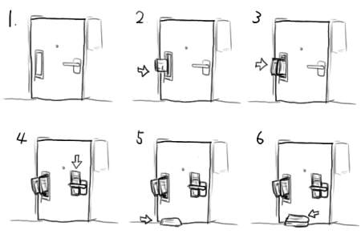

DigitaLove (1999/10/10)
漫画の台詞覚えるのやめようぜ！(挨拶)
大学時代の友人が集ったりしたので，久しぶりに会話．結果，宴が終わる頃には無精髭をさすりながら「人生…」とつぶやく羽目になりました．
友人が何かに取り憑かれたかのようにプログレCD(17枚)を買いまくっていたのが印象的でした．
『星の瞳のシルエット』が文庫化！
毎号クライマックス！二人の恋の行方はどうなるの！？
100万乙女のバイブル！
「100万乙女って何が100万よ？」
「石高じゃねぇ？」
最近，読売新聞が頼んでもいないのにポストに投函されるようになりました．このままでは寿命が縮んでどうしようもないので徹底抗戦の構えを！具体的には『オレは新聞を(ポストからすら)受け取りません作戦』！作戦の行方は下図で！
敗色濃厚げ！なお，普通の新聞の勧誘には「インターネットで見てます」が相当効きますので試してみるといいと思った．
信じて待つことしかできない時だってあるんだぜ？＞ヒライワ